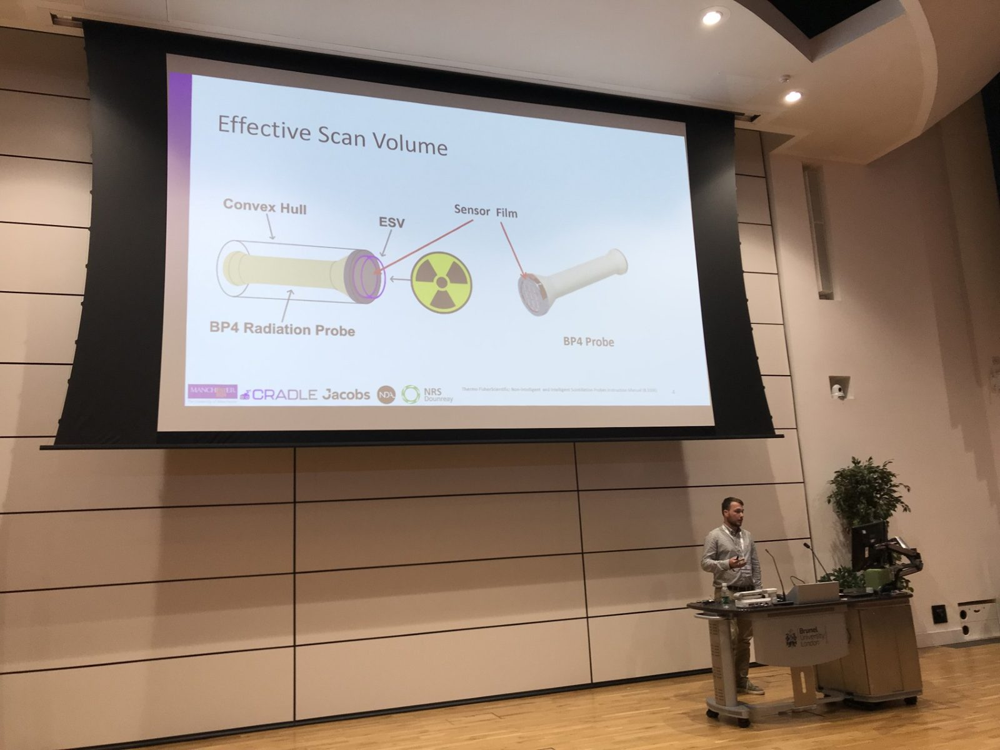

TAROS (Towards Autonomous Robotic Systems) is an annual UK based robotics conference. This year the conference and proceedings focus on robotics, mechatronics, image processing, computer vision, and application-based systems, human computer interaction. This was the 25th annual conference which was held at Brunel University of London and was attended by many UK based academics as well as several overseas researchers. TAROS is regarded as a great introductory conference for PGRs to submit to and attend to gain vital experience in the publication and presenting processes.
My experience
Although I have presented works at different events, this was my first experience with publishing a paper and presenting work at a conference. To say it was nerve-wracking is an understatement! Having your research scrutinised by friends and supervisors is one thing but when it is scrutinised by the experts in the field it brings all new emotions.
Luckily, I was not alone. There were several PhD students from The University of Manchester presenting at the conference. It also turned into a great networking event as everyone was super friendly and all passionate about different aspects of robotics. I was fortunate to give a 15-minute presentation on my first year work with it being published into the proceedings.

There were many interesting projects and papers this year. Some highlights for me were a robotic dog tail and how humans can perceive emotion from it, an opensource soft robot. And obviously work by my friend on using the Extended Cooperative Dual Task-Space.
Next year's TAROS was announced to be at The University of York so we will have to wait and see about publishing there, but in the meantime check out the paper and publication here!